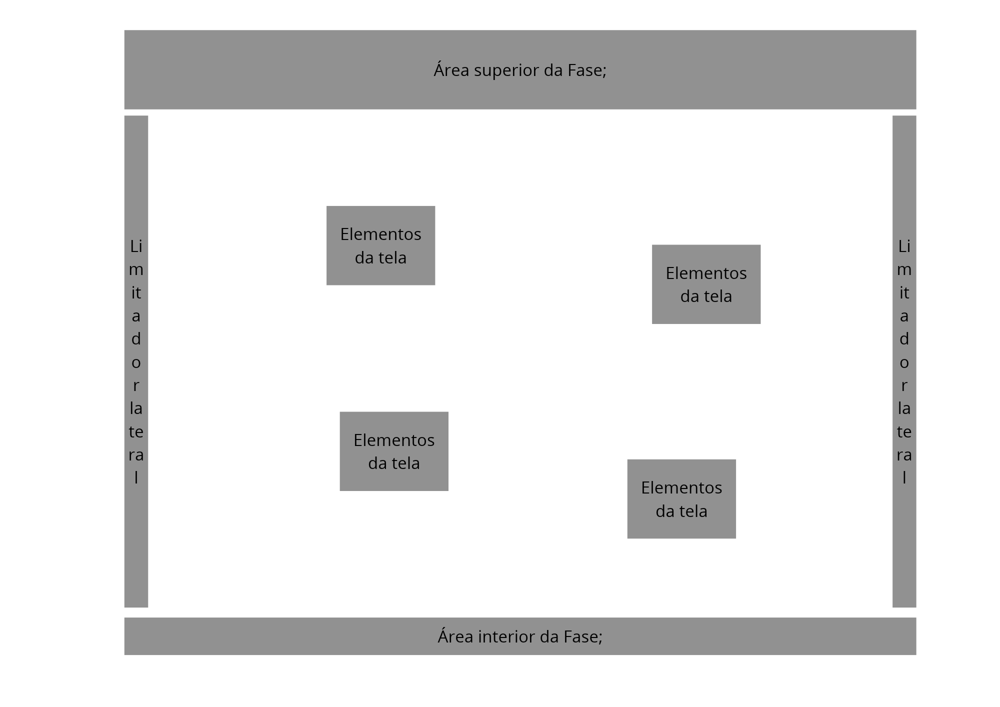
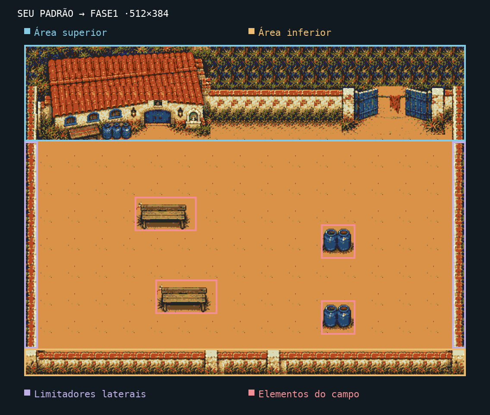
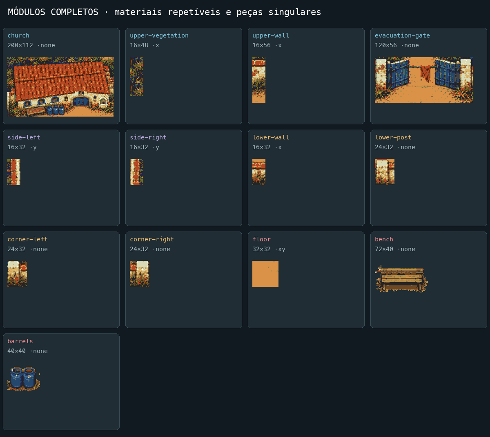
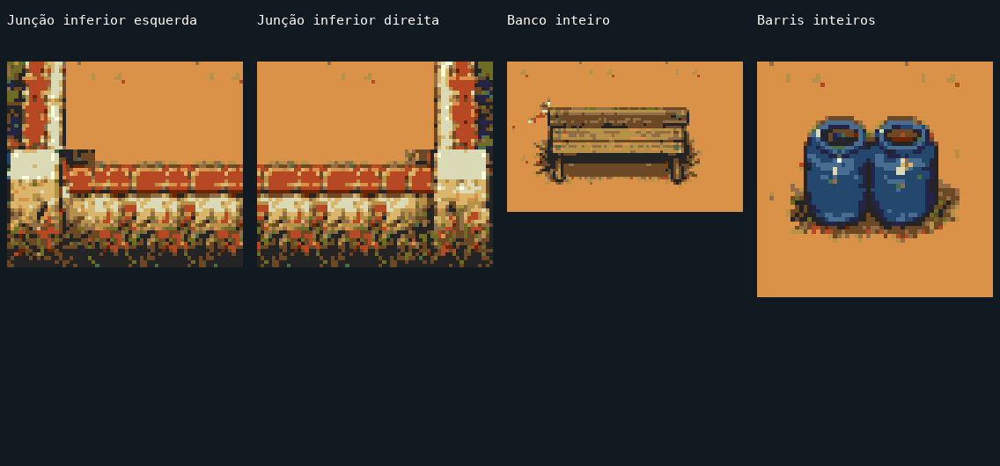

PLAGUEFALL · PILOTO DE COMPOSIÇÃO · APENAS A FASE 1Seu padrão, aplicado ao pátio da igreja.
A arquitetura define as bordas. O campo contém objetos inteiros. Os materiais se repetem por regras de encaixe e escala. Esta é uma proposta para sua avaliação antes de levar o padrão às demais fases.
Área superiorÁrea inferiorLimitadores lateraisElementos do campo
Fase 1 · composição nativa completa
512×384 pixels, com a paleta do jogo. A igreja e o portão preservam sua identidade; o limite inferior e os objetos do campo vêm da nova cena completa.
Imagem inteira em resolução nativaEstado danificadoDesenho completo do ImageGen
Objetivo: segurar os insetos por 90 segundos enquanto os civis terminam de sair. Quatro obstáculos baixos criam pequenos desvios e deixam o eixo central aberto.
As quatro partes do seu desenho

Seu esquema de composição
As cores identificam as partes; não fazem parte da arte do jogo.Área superior
Igreja inteira e portão de evacuação mantêm a identidade da primeira fase. Materiais de muro e vegetação se repetem no restante da faixa.
Área inferior
Muro próprio de primeiro plano com coroamento, dois pilares e dois cantos que fecham as laterais.
Limitadores laterais
Paredes contínuas com materiais compatíveis, conectadas ao limite inferior; os módulos esquerdo e direito conservam sua iluminação própria.
Elementos do campo
Dois bancos e dois pares de barris, extraídos inteiros. As posições deixam a passagem central e os contornos conectados.
Fluxo de trabalho para as próximas fases
Cada etapa gera uma prova verificável. A aprovação visual acontece depois da montagem na resolução do jogo.
- 01
Definir objetivo e escala
Dimensões do mundo, duração, personagens, entradas/saídas e escala de referência. Na fase 1: segurar 90 s, um tipo de inseto, civis evacuando pela igreja.
- 02
Desenhar as quatro regiões
Diagrama do mundo com limites e área de circulação. Os cantos pertencem ao projeto; não são sobras de recortes.
- 03
Desenhar uma cena completa
Uma imagem inteira coerente, sem HUD. Revisar perspectiva, iluminação, escala, bordas e narrativa antes de extrair peças.
- 04
Definir a gramática de repetição
Peças de início/meio/fim e junção. Piso se repete em duas dimensões, muros somente no seu eixo, objetos completos em pontos deliberados. Arquitetura singular não é esticada para preencher espaço.
- 05
Extrair módulos inteiros
Atlas com contorno, sombra e base preservados; nada de metade de banco, janela vizinha ou coluna cortada no meio do campo.
- 06
Montar a versão nativa
Grade 8×8, paleta e materiais comuns, junções verificadas. Enxugar a diversidade de módulos em caso de excesso; nunca substituir um tile por outro apenas parecido.
- 07
Definir circulação e profundidade
Limites e bases físicas dos obstáculos. Validar todos os caminhos, pontos de entrada e apoio dos personagens; projetar oclusão quando um objeto puder ser contornado.
- 08
Medir memória real
Tiles únicos, bytes gráficos, mapas, paleta e margem para estados. Medir o cenário montado, sem usar o tamanho do PNG como custo de VRAM.
- 09
Revisar cenário inteiro e câmeras
Imagem completa, comparação com o esquema, junções ampliadas, enquadramentos superior/central/inferior e personagem em escala real. Distinguir recorte de viewport de asset amputado.
- 10
Validar a primeira fase
Protótipo e parecer com pendências explícitas. A extensão do padrão às outras fases depende da aprovação do usuário.
Regras para repetição harmoniosa
- Repetir módulos com conexão física válida; não carimbar fragmentos aleatórios.
- Preservar o mesmo ponto de luz; espelhar não é automaticamente válido para sombras e volumes.
- Alternar variantes de piso de forma determinística e de baixo contraste, sem criar setas ou manchas que concorram com o combate.
- Manter um marco arquitetônico principal; repetir materiais e vãos completos, não multiplicar a igreja.
- Para corredores longos, repetir setores com mesma altura e conexões compatíveis, usando marcos de progressão em intervalos deliberados.
- Ao aumentar o mundo, mapas crescem; gráficos só crescem quando entram peças inéditas. Confirmar também o limite do streaming e o tamanho dos mapas na ROM.
- O orçamento inclui estados alternativos compartilhados, como dano. Não aprovar o conjunto com base apenas no estado intacto.
Fluxo completo reutilizável ·Prompt e referências da imagem
Peças inteiras e conexões previstas
O banco e os barris são objetos completos. Muros e piso são materiais repetíveis; igreja, portão, pilares e cantos cumprem papéis próprios. As laterais foram extraídas separadamente para manter a luz consistente.

Tamanhos e eixos de repetição
| Peça | Região | Pixels | Repete em |
|---|
| church | Área superior | 200×112 | none |
| upper-vegetation | Área superior | 16×48 | x |
| upper-wall | Área superior | 16×56 | x |
| evacuation-gate | Área superior | 120×56 | none |
| side-left | Limitadores laterais | 16×32 | y |
| side-right | Limitadores laterais | 16×32 | y |
| lower-wall | Área inferior | 16×32 | x |
| lower-post | Área inferior | 24×32 | none |
| corner-left | Área inferior | 24×32 | none |
| corner-right | Área inferior | 24×32 | none |
| floor | Elementos do campo | 32×32 | xy |
| bench | Elementos do campo | 72×40 | none |
| barrels | Elementos do campo | 40×40 | none |
none=peça singular; x=horizontal; y=vertical; xy=material de superfície. O custo total é contado depois da montagem; não é a soma das áreas do atlas.
Junções e silhuetas ampliadas

Regiões e caixas de colisãoTiles reais8×8Origem e posição de cada peça
Repetição com custo medido
638/640tiles únicos, com os dois estados
20.416Bgráficos na VRAM
6.144Bmapa por estado na ROM
32Bpaleta de 16 cores
Restam 2 tiles. O piloto cabe no orçamento atual, mas qualquer peça nova precisa de uma nova contagem. A igreja danificada já está incluída.
O PNG de desenho pode ser grande; seu tamanho em disco não determina o consumo do jogo. O cenário usa gráficos reutilizados, mapas de índices e uma janela de streaming 64×32 tiles na VRAM.
Se o cenário crescer usando o mesmo repertório
Estimativa de mapas, mantendo os mesmos 638 tiles. Novas construções ou estados acrescentam gráficos. Essa simulação não significa que essas outras fases foram implementadas.
O padrão visto pela câmera real
O mundo tem 512×384 e a tela mostra 320×224 por vez. Portanto, a imagem completa serve para revisar o conjunto; os enquadramentos abaixo mostram o que o jogador realmente vê em cada posição.
NTSC · 9 enquadramentos reais +20 testes de contato
 Faixa superior · câmera(0, 4)
Faixa superior · câmera(0, 4) Faixa superior · câmera(96, 4)
Faixa superior · câmera(96, 4) Faixa superior · câmera(192, 4)
Faixa superior · câmera(192, 4) Campo central · câmera(0, 100)
Campo central · câmera(0, 100) Campo central · câmera(96, 100)
Campo central · câmera(96, 100) Campo central · câmera(192, 100)
Campo central · câmera(192, 100) Faixa inferior · câmera(0, 160)
Faixa inferior · câmera(0, 160) Faixa inferior · câmera(96, 160)
Faixa inferior · câmera(96, 160) Faixa inferior · câmera(192, 160)
Faixa inferior · câmera(192, 160)Prancha das9 câmeras ·Relatório dos testes ·Bomba e igreja danificada
PAL · 9 enquadramentos reais +20 testes de contato
 Faixa superior · câmera(0, 4)
Faixa superior · câmera(0, 4) Faixa superior · câmera(96, 4)
Faixa superior · câmera(96, 4) Faixa superior · câmera(192, 4)
Faixa superior · câmera(192, 4) Campo central · câmera(0, 100)
Campo central · câmera(0, 100) Campo central · câmera(96, 100)
Campo central · câmera(96, 100) Campo central · câmera(192, 100)
Campo central · câmera(192, 100) Faixa inferior · câmera(0, 160)
Faixa inferior · câmera(0, 160) Faixa inferior · câmera(96, 160)
Faixa inferior · câmera(96, 160) Faixa inferior · câmera(192, 160)
Faixa inferior · câmera(192, 160)Prancha das9 câmeras ·Relatório dos testes ·Bomba e igreja danificada
As 40 provas de contato passaram: quatro lados de cada objeto e quatro limites, em NTSC e PAL. Os 20.416 bytes gráficos na VRAM correspondem ao exportado e o uso da bomba aciona a arte danificada. RAM prepara posições e suspende combate; isto não é um teste de dificuldade.
Baixar ROM do protótipoOrigem da ROM e limites do protótipo
Pronto para sua avaliação
Este piloto implementa o padrão nas quatro regiões e preserva a história introdutória. A composição nativa, os cantos e os objetos estão disponíveis sem marcações para julgamento visual.
- Os quatro setores existem no cenário completo; cada elemento de campo tem silhueta e apoio visíveis.
- A igreja é reutilizada inteira, sem combinar telhado e fachadas de construções diferentes.
- As peças inferiores foram extraídas da parede completa da nova cena, incluindo seu coroamento e cantos.
- O piso nativo é mais discreto que o da imagem de desenho, para reduzir textura repetida e manter leitura de personagens.
- A vegetação superior tem repetição perceptível na resolução nativa. É material de fundo; não é uma sequência de edifícios ou objetos truncados.
Critérios para estender o padrão à campanha
- Quatro regiões reconhecíveis no mundo inteiro.
- Construções e objetos completos, junções sem lacunas e chão residual controlado.
- Piso e obstáculos mantêm escala, perspectiva e iluminação.
- Circulação do personagem conectada e consistente com o apoio visual.
- Campo legível nos enquadramentos reais e com HUD.
- Recursos cabem no orçamento medido e reconstrução dos tiles é exata.
- Parecer visual e resultado técnico registrados separadamente; aprovação do usuário é a etapa final deste protótipo.
Limites registrados
- 512×384 é o tamanho do mundo; o jogo mostra 320×224 por vez. Todas as quatro bordas não aparecem simultaneamente durante a movimentação.
- 638 de 640 tiles deixam apenas 2 tiles livres. O repertório deste piloto está fechado; adicionar mais desenhos exige reaproveitamento ou revisão do orçamento.
- As caixas físicas dos objetos baixos cobrem conservadoramente a silhueta completa, em grade 8×8. É a escolha deste piloto para impedir passagem por dentro da arte sem adicionar oclusão dinâmica.
- Os testes usam RAM para preparar posições e suspender combate. Não são uma vitória humana nem uma nova calibração da dificuldade.
- A ROM é um protótipo isolado com dados substituídos e tabela própria de obstáculos. Somente a fase 1 foi validada; outras fases dessa cópia podem usar recursos da igreja compartilhados.
- Nada foi integrado à campanha de produção. A avaliação visual do usuário precede a extensão do padrão.
Aguardando sua avaliação do padrão. As outras fases e a ROM de produção permanecem sem alterações nesta validação.
Parecer e verificações ·Montagem reproduzível ·Preparação do protótipo isolado